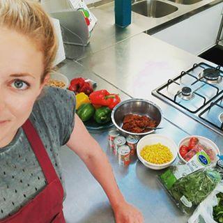

Gastoptredens
Wij stellen met veel plezier aan u voor:
Lena

Lena heeft een uitmuntend gevoel voor balans. Ze maakt de meest prachtige vegetarische gerechten. Smaakvolle creaties zijn haar specialiteit.
Lena is een graag geziene gastoptreder bij LekkR & AnderZ, het verdient dan ook aanbeveling dat u tijdig rerserveert wanneer u van haar kookunsten wilt genieten.
U kunt haar creaties nader bestuderen en haar eventueel inschakelen om voor u te koken via haar Facebook-pagina.
LeVen@levenlifestyle
Lena gaat weer voor ons koken op DAG/MAAND/JAAR.